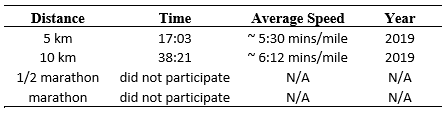
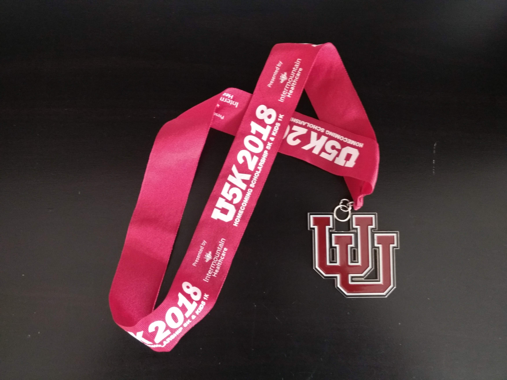
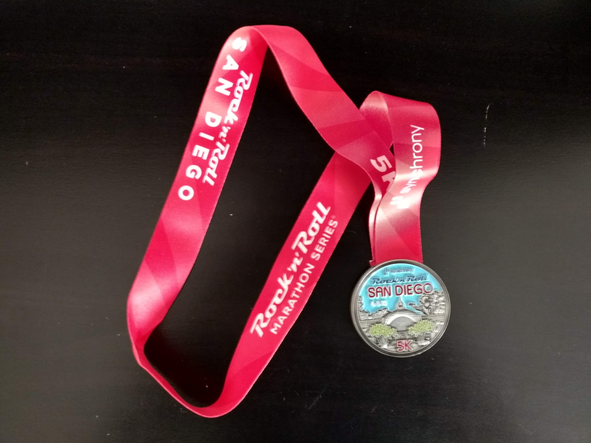

me, myself and fitness
When I am not sittting in front of the computer writing code or working on experiments in the laboratory, I am either running, cycling or swimming in the university gym.
I am not a pro athlete(never tried to be one too!).
My current running stats are below:

I am pretty bad at swimming currently hence I don't want to embarrass myself by putting up those stats!
Some of my past finisher medals :)
- 2018 University of Utah Homecoming Scholarship 5k, Salt Lake City, Utah, USA.
Run Time: 32:47 mins
Overall Rank: 298 out of ~800 qualified finishers [Complete Result]

- 2018 San Diego Rock 'n' Marathon Series (5k), San Diego, California, USA.
Run Time: 41:15 mins
Overall Rank: 2031 out of ~2700 qualified finishers
